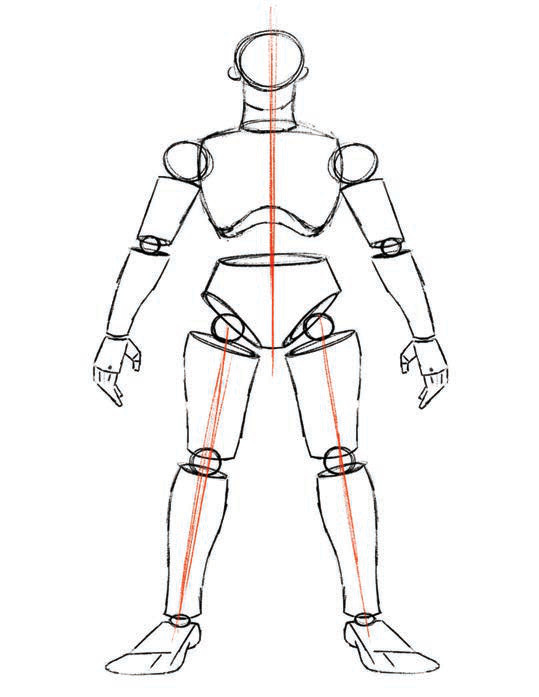

Kazi ya kufanya namba 7
Tumia maumbo ya mche duara kuchora miguu ya binadamu.
Uchoraji wa picha ya mtu mzima
Ili kuchora umbo la mtu mzima, chora umbo la kichwa, kifua, mikono, na miguu na kuyaunganisha kila moja likae sehemu yake ili kupata umbo la mtu mzima.Kielelezo namba 10 kinaonesha mwongozo wa kutumia maumbo katika kuchora umbo la mtu mzima.

Kielelezo namba 10: Matumizi ya maumbo katika kuchora umbo la mtu mzima